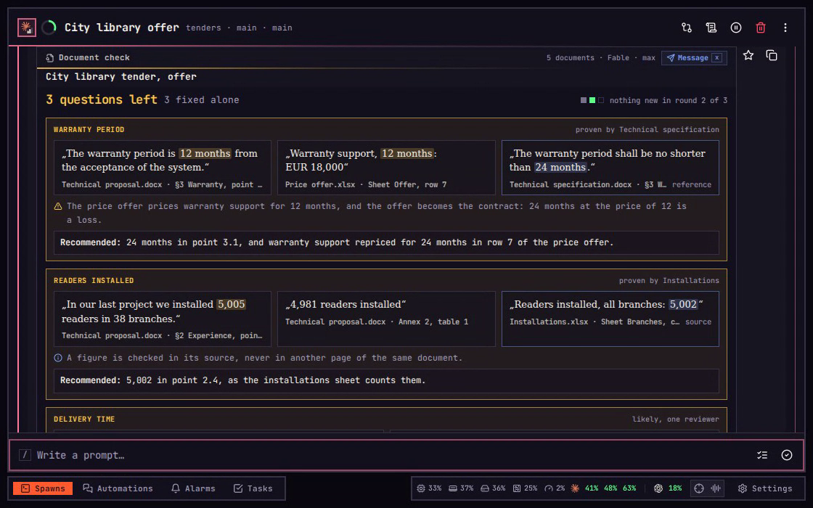
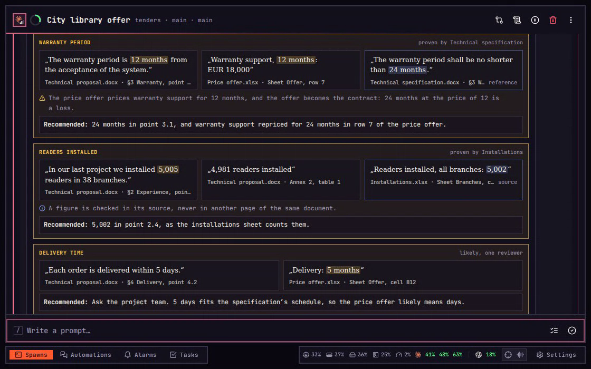
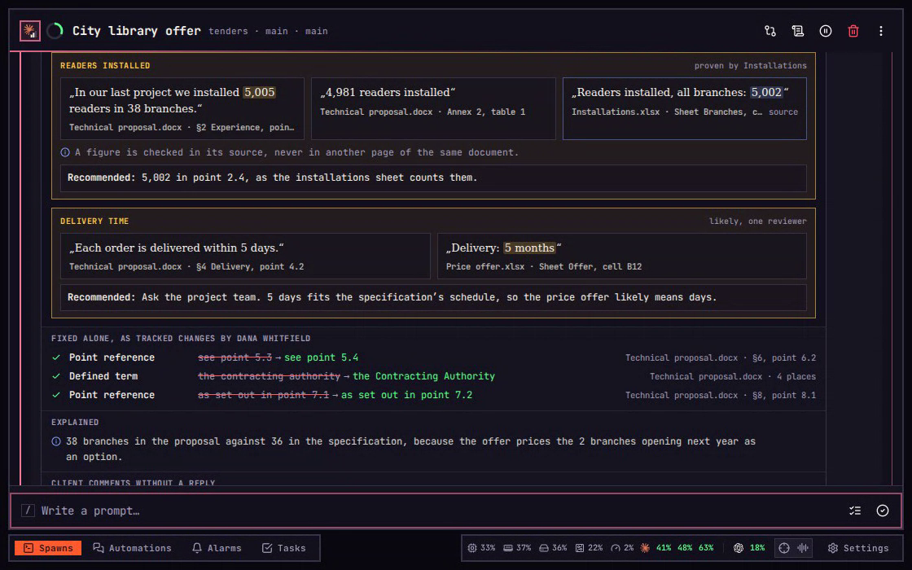
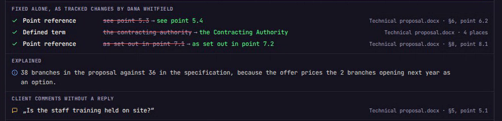
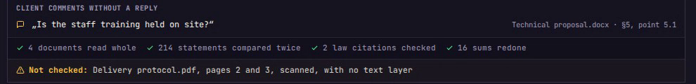
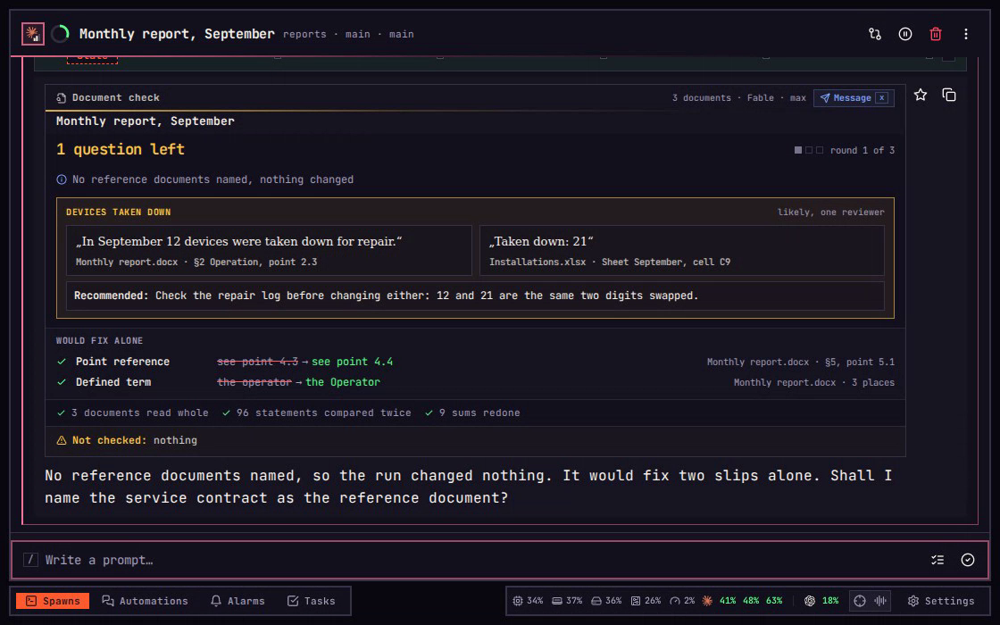
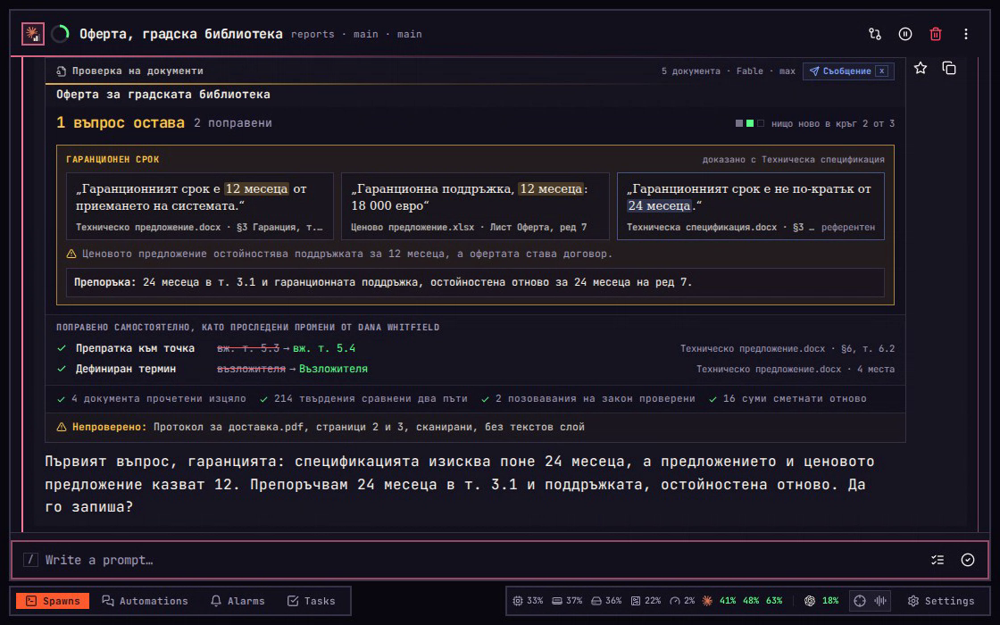

Document check
Find where a set of documents contradicts itself before it goes out.
Several agents and people write one offer at once, each on their own part. The proposal promises 12 months of warranty while the specification demands 24, and nobody reads both pages side by side. /rd reads every document, compares every statement twice, fixes only mechanical slips, and asks about everything else with one recommended answer.
On a phone, tap the button named beside each key.
01Start
Start a check with /rd.
Start a spawn in a folder of its own on the imba server, open Files from the spawn's menu, or o on a laptop, and press Upload files or Upload folder to put the documents there; the fixed files download from the same panel. Type /rd, then against and the reference document, the one every other must agree with, then source and the sheet the figures come from, each file name in quotes: /rd against "Technical specification.docx" source "Installations.xlsx". With no reference document named here or on Settings, the run only reports and changes nothing. Before anything runs, the agent says what the run costs and waits: 7 reviewers, the helper agents that do the reading; up to 3 rounds, passes over every document; Fable max, the model and how hard it thinks; and the share of the login's five-hour room, the usage its subscription allows. Yes starts it. No starts nothing; rounds and a smaller number, such as /rd rounds 1, makes it cheaper.
02The card
Read the result first.
The run ends on a Document check card. Its head names how many documents were read, the model and how hard it thought. Under its title the result stands in its colour: Clean in green, Not passed in red, and in amber 3 questions left, which means the run waits for you. Beside it on a laptop, and under it on a phone, 3 fixed alone counts the slips fixed without asking. A round is one pass of the 7 reviewers: 2 readers list every statement, 3 hunters compare statements on one subject, and 2 checkers test them against the references, the sources and the laws cited. Another round runs only after a round that wrote a fix, up to three; here round 2 found nothing new. Each round has a mark, on the right on a laptop and under the result on a phone: green when it found nothing new, grey when it found or wrote something, empty when not run. The agent now asks each question in the chat, one at a time, as Answer below shows. Every figure on the card comes from imba's own record of the run, never from the agent.

03A question
Each question comes with an answer.
Each question stands in its own box: the statements that cannot both be true, each named by its document, with its section and point where the width allows, and last the document that decides it, its words lit. On a laptop they stand side by side; on a phone one under another, with “or” between the two that clash and “and” before the one that decides. Under them, the warning sign says what the answer sets off: the price offer prices warranty support for 12 months, and the offer becomes the contract. Recommended gives the one answer that weighs it: 24 months, and support repriced for 24.

04Figures
Figures are checked in their source.
Readers installed: the proposal says 5,005 in point 2.4 and 4,981 in Annex 2. Neither page can settle the other, so the check reads the installations sheet named as the source, which says 5,002, and recommends 5,002 in point 2.4; Annex 2 comes back in a later round. The words at the top right of each box say how sure it is: “proven” when a reference, a source or a redone sum shows it; “sure, both reviewers” when two hunters found it and the agent you talk to in the spawn confirmed both sides cannot be true; “likely, one reviewer” when only one hunter found it. A likely find, such as the delivery time below it, is always a question and never fixed.

05Fixes
What it fixes on its own.
Only mechanical slips are fixed without asking: a point reference left behind by renumbering, a defined term written small, and a Latin letter inside a Cyrillic word. They stand under “Fixed alone”, as tracked changes by Dana Whitfield, the author set on Settings, so Word shows each one and its Reject undoes it. Every figure, date, sum, warranty, scope or duty is a question instead. A change in an Excel, markdown or text file carries no tracked change; to undo one, ask the agent to put the file back from the copy imba keeps. Under the fixes, “Explained” says why a difference is no fault, and “Client comments without a reply” lists each Word comment nobody answered.

06Not checked
What was checked, and what was not.
The card's foot counts what was done: 4 documents read whole, 214 statements compared twice, 2 law citations checked, 16 sums redone. The sums are imba's own work: before any reviewer starts, it finds blanks such as XX or ___, template notes and a year that is not the document's own, and works every table sum and Excel formula out again, at no cost. The last line always says what was not checked, here pages 2 and 3 of the delivery protocol, scanned with no text layer. It also names old .doc, .xls and .ppt files, pages possibly scanned, formulas imba could not work out, and parts a Word file lacks, such as its numbering, and counts the laws whose text could not be fetched. It reads “Not checked: nothing” only when nothing was left out.

07Answer
Answer, and it is written everywhere.
The agent asks the questions one at a time, each with its recommended answer. Say yes to take it, write the value you want instead, or ask to keep the documents as they are. imba writes your answer, as a tracked change in a Word file, and carries it to every other place that still says the old words: 24 months went into point 3.1 of the proposal and row 7 of the price offer. A reference document or a source is never written. After the last answer, another round reads everything again and a new card follows. Here Annex 2 still says 4,981, so one question is left, and the band “Your answers, carried to every place” lists each answer with its places. When a later round finds the old words somewhere new, your answer is written there too, as a “Carried answer” row under “Fixed alone”. A question still open stays on every later card until you answer it; a red cross under it says when a fix came back or its quoted words changed.
08Plan only
With no reference, nothing changes.
A second example starts here: a monthly report and its installations sheet. A run with no reference document named, or started as /rd plan, changes nothing; a source named alone does not count as a reference. Its card says “No reference documents named, nothing changed”, or “Plan only, nothing changed” after /rd plan. Its questions stand as on any card, and “Would fix alone” lists the slips a real run would fix, each struck through beside its fix. An answer given on this card is not written. The agent then asks whether to name a reference document. Name one after against, or on Settings, and run /rd again.

09Endings
Not passed, and Clean.
The same report then runs against the service contract. The report says 12 devices were taken down for repair and the sheet says 21. A run ends Not passed when imba refuses one helper's work three times, when a helper's login refuses the work, such as a spent usage limit, which the last line quotes, when a fix comes back after another writer undid it, or when the round limit is reached while the run is still writing fixes. Here the second checker's answer failed imba's checks three times, so its statements were never tested; the last line calls it check step 2 of round 1. Type /rd to run the check again. A new run starts from nothing, so a question you kept is asked again. A run ends Clean when a round reads every document again and finds nothing new, with no question left: here round 2, once the sheet's 21 became 12. A Clean card still names what was not checked, here an old .xls file.
10Laws, code, batches
Laws, code and generated documents, in the same run.
A third example, a training grant application, shows the three wider checks in one run: /rd against "Grant call.docx" code academy-portal batch "Certificates/" from "Learners.xlsx" key "No.". Before it asks the cost, the agent finds every law a document cites on the law sources, and does the same mid-run when the readers find more; imba fetches each and reads it as it stands now: the application asks for 90% of the costs, and Article 14(2) of the act allows at most 80%. After code, the run reads that repository and checks what the documents promise: the work plan promises a ministry export from the first month, which the code has not built, and the agent opened the running portal to see its Export menu, changing nothing there; the green tick under that question says what it saw. After batch, each generated certificate is matched to its row of the learners sheet by the key column: certificate 0147 says 32 hours and its row 36. Each is tagged law, code or batch row, and answered like any other question.
11Message
Tell the owner in one press.
Message on the card, or x on a laptop, asks the agent for a short note to the documents' owner from the newest check. The press types /rd message and the run's name, such as rd-0c41f7a2b9, for you. The agent shows who it goes to and the exact words, and sends it by Slack only after your yes. Nothing is sent from the card itself. x is Message only while the newest reply holds the card; on any other turn x opens Delete the spawn, so press the card's Message button instead.
x The note
12Settings
Set what every run starts from.
Settings › Spawns › Document check holds what every run starts from. Reference documents lists the names every run checks against, so a plain /rd in that folder is a real run: Add puts one in, and the cross takes one out on its second press. Look for switches each kind of clash on or off. The list under Every word, button and setting gives each setting, its range and what it starts as.
13In Bulgarian
The card in Bulgarian.
With Card language set to Bulgarian, the card reads in Bulgarian: Проверка на документи, 1 въпрос остава, Препоръка, Непроверено, and НЕ е минало for a run that fails. The agent asks its questions in the card's language too. A blank left unfilled in a document, such as в срок до XX дни, is asked under the subject незапълнено място on a card in either language.

One run can take several reference documents, a source, code and a batch at once; every word it takes, every setting and every rare case are listed below.
Every word, button and setting
Each word, button and setting.
The chapters above use a few of them. Here is all of the Document check: the words typed after /rd, the card's button and the Settings page. Keys need a keyboard; on a phone or tablet the buttons are taps.
Typed after /rd
Words after /rd change that one run, in any order, such as /rd against "Grant call.docx" against "Signed contract.docx" source "Budget.xlsx" code academy-portal batch "Certificates/" from "Learners.xlsx" key "No." rounds 5.
- against and a fileNames a reference document the others must agree with. A file name goes in quotes, and against may come more than once.
- source and a fileNames a source of figures, such as a database export or a signed protocol.
- code and a repositoryAlso checks what the documents promise against that repository's code.
- batch, a folder, from and a fileChecks each generated document in the folder against its row in the sheet.
- key and a columnNames the sheet's column that matches a generated document to its row.
- rounds and a numberSets this run's round limit, from 1 to 20.
- planReads and compares everything, and changes nothing.
- claude or codexRuns this run's reviewers on that agent instead of the one Settings name.
- message and a runAsks for the note to the owner; the card's Message types it for you.
Laws, code and batches on the card
A question tagged law, code or batch row reads like any other, with one recommended answer.
- lawA cited article that no longer says what the document relies on, or was repealed, with the change it needs.
- codeA promise the named repository has not built, or built differently; the agent may open the running application to look, and changes nothing there.
- batch rowA generated document whose value differs from its row, naming the document, the field and both values.
On the card
- MessagexAsks the agent for a note to the documents' owner, which it sends only after your yes.
- Round marksOne per round: green found nothing new, grey found or wrote something, red failed or ended a run that did not pass, empty still running or never run.
During a run
- FoldersThe check reads the folder and every folder inside it, except hidden folders and the folders programs build into.
- A missing referenceThe agent names any reference document it could not find before you say yes.
- A long lawChecked part by part. When it turns out longer than the yes covered, the run stops on a new cost question until you say yes again.
- A later answerReplaces the earlier one on the same subject.
- KeepHolds for the rest of the run at the places the question named; the same clash found anywhere else, or in a new /rd, is asked again.
- A blankIts recommended value comes from another line on the same subject, or else from a checker's reading of the references and sources, to be confirmed; only when neither gives one is the documents' owner asked.
- Fixed in round 1, back in round 2Under a question, after a red cross: a fix came back. The same line says when the quoted words changed or the document could not be read this round.
- Not written:Nothing is written when a file changed after it was read, or another program has it open; the question names the reason and stays open.
- After the round limitAn answer given then is written but not read again, and the card's last line says so.
- Unverified lawsThe last line counts each law whose text could not be fetched, and each checked against only part of its text.
Copies and undo
- Undo a changeBefore a file's first change imba keeps a copy of it on the server. Ask the agent to put the file back from that copy.
- (saved while imba fixed it)A file with this in its name is your own save, made while imba wrote a fix. Keep it, and copy over what you need.
- .imba-set-asideA hidden folder beside the document that empties itself within an hour. Leave it out when you send the folder on.
- May have been writtenThe server restarted while it wrote a fix. Open the file at that place to see whether the fix is in.
On Settings › Spawns › Document check
A number or name saves on Enter or when you leave its field; a switch or choice saves on the press.
- ReviewerClaude or Codex, its model and its effort.
- AccountThe login the reviewers run on: Best seat, the login with most room left; Host, the server's own login; or one by name.
- Readers, Hunters, CheckersHow many of each a round deals out, from 1 to 6, with at least 2 hunters: readers list the statements, hunters compare them, checkers test them against the references, sources and laws.
- Round limitThe most rounds a run takes, from 1 to 20, 3 to start with.
- Mechanical fixesWhether slips are fixed alone, or every find is asked.
- Author of changesThe name every tracked change is signed with, at first the server's git user name.
- Card languageEnglish or Bulgarian; a Bulgarian card that fails reads НЕ е минало.
- Reference documentsThe names every run checks against, in order, up to 20. Add puts one in; the cross takes one out on its second press.
- Law sourcesWhere a cited law's current text is fetched from: lex.bg and eur-lex.europa.eu to start with. Add and the cross work as above.
- Look forEach kind of clash, switched on or off; a kind switched off is not looked for, and its finds stay off the card.
Look for
- FiguresOne figure stated two ways, a sum that does not match its parts, a price worked out for another quantity or term.
- DatesDeadlines, durations and schedules that disagree, and a year that is not the document's own.
- DutiesA duty given to another party, or dropped.
- ScopeWhat one document includes and another leaves out or counts differently.
- NamesA party, product, annex or person named differently.
- LogicStatements that cannot both hold though no figure differs.
- UnitsDays in the text against months in the table, even when both say 5.
- ReferencesA document that describes itself wrongly, such as five annexes with four attached, and evidence cited that is not there.
- LanguageGrammar, and two language versions of one document that do not say the same.
- LawsTwo documents citing different acts for one rule, and a cited law checked against its current text. Law finds reach the card with this switch on or off.
Files
What the check reads, and what it writes a fix or an answer into.
- WordRead whole, with headers, footers, footnotes, text boxes and comments, as Word shows it with tracked changes accepted. Written as tracked changes.
- Excel and CSVRead with every formula worked out again. A plain Excel cell is written; a formula and a CSV file never are.
- Markdown and textRead and written in place.
- PDFRead page by page, never written. A scanned page with no text layer is not read.
- PowerPoint and OpenDocumentRead, never written.
- Old .doc, .xls and .pptNot read; saved in the new format, they are read next time.
- LimitsUp to 300 documents a run, each up to 64 MB.
Recorded in imba. Every spawn, repository and person in these films is made up.